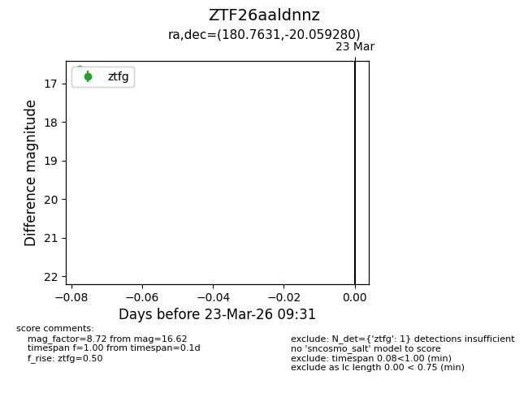
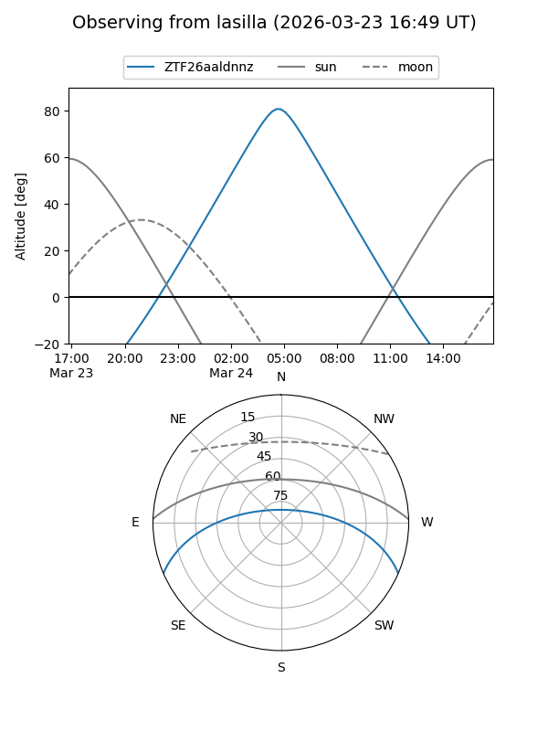
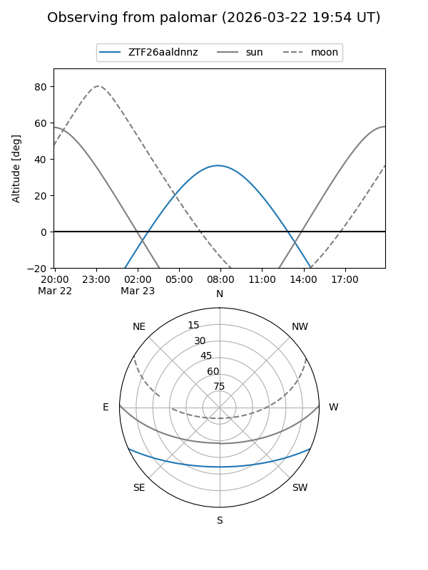

ZTF26aaldnnz
Target ZTF26aaldnnz at 2026-03-23 09:33
Aliases and brokers:
FINK: link
Lasair: link
ALeRCE: link
alt names
ZTF26aaldnnz (ztf,fink_ztf)
Coordinates:
equatorial (ra, dec) = 180.7631,-20.05928
equatorial (HMS+DMS) = 12:03:03.14,-20:03:33.41
galactic (l, b) = (287.7232,+41.37914)
Flags:
Photometry:
last ztfg=16.62
1 ztfg detections
Lightcurve

Visibility


Additional plots